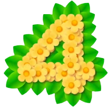

's Free Update is Quite Good 🧐

got a free update which added a hard mode, a photo mode, and decor (which wear little costumes). And like. Man I was surprised by how much I'm enjoying it. Also how ass I am at , apparently.
First off, I did a full playthrough with the Fierce Activity Level, and, uh, I'm like fucking terrible at , guys, fr. It was so hard 😭 it was like base but if Oatchi cheese was absolutely required and also all your guys died way more. I never rewound time so a lot of extremely stupid mass casualty events happened very frequently. Overall it felt pretty the same except ice felt a lot worse and I ended up using purple a lot more.
They added New Game Plus which lets you start a new playthrough with everything unlocked, plus all onions, plus skip the first day. Which is great. This all means you get access to the Lineup Trumpet from day 2, which, man the game controls so much better when you have that option the entire playthrough. They should probably give it to you from the beginning in the first place.
No Auto Lock On is really great. The game feels wayyyyyyyyyyyyyy better to control, like soooo much better. There's weird, like, partial-lock-on, I really wish the system was just the exact same as 3 instead of the weird sloppy thing that it is now, but. It's so much better.
Decor are a nice distraction and they're pretty cute to have in your party. I guess I'm a fan.
As evidenced by the gallery above I'm a huge fan of the photo mode. I literally never use photo modes in any other video game I play, but man something about 's, I just. It's so fun to take photos of this game. And the game is absolutely gorgeous. I still think I prefer 3's art style, but like. Goddamn.
That's all I gotta say. I think next time I replay I'm gonna play it in Normal mode but with no Oatchi upgrades or Suit upgrades, see how that feels. I might still enable the lineup trumpet though.
11/25/25 7:05:14 AM CST